Brandon Abdul Baki
K-12 Head of Curriculum / Head of T&L
Ms. Leila Chammas (VP), Ms. Shada Dbaissy (VP), and Mr. Duraid Al Oubaidly (Principal)
Serving as the K-12 Head of Curriculum and Head of Teaching & Learning, focusing on instructional coaching, curriculum alignment, and leading whole-school academic improvement initiatives.
To modernize instructional design, integrate data-driven decision making, and foster a collaborative, non-judgmental professional growth culture among teachers.
Transitioning from teaching to leadership, I prioritize "high impact, minimal effort" solutions that elevate student learning while actively lightening teachers' workloads.
Classroom observations were traditionally viewed strictly as evaluative "judgments" rather than opportunities for growth. This fostered an environment of defensive compliance.
Rebuilding trust required consistency. By conducting non-judgmental co-teaching and model lessons, teachers gradually opened up, moving toward genuine collaboration.
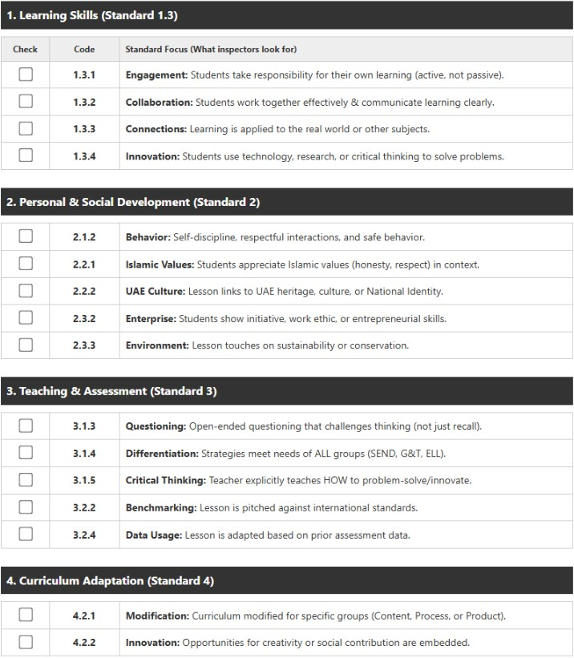
Spearheaded the writing and strategic direction of the SIP.
Integrated modern AI, digital literacy, and essential UAE/real-life contexts.
Embedded specific SIOP objectives for ELLs, especially within Math and Science maps.
Developed a checklist aligning teacher lesson plans directly with the UAE Inspection Framework.
Partnered with the Head of Primary to organize a PBL exhibition (adapted in light of the ongoing crisis).
Formulated a comprehensive plan aligning our school's vision with the SPEA strategic goals.
Worked extensively with educational consultants and inspectors to ensure the implementation of industry best practices.
Led whole-school sessions on AI integration, Higher-Order Thinking (HOTs), and reducing Cognitive Load in lesson materials.
Addressed daily observed challenges asynchronously (e.g., relationship building for management, Think-Pair-Share strategies).
Developed a centralized Teaching & Learning Hub for staff, alongside a dedicated Leadership Hub for SLT tools and resources.
Championed community wellbeing by dispatching targeted support communications for teachers and students during the ongoing UAE crisis.
Developed a dynamic guidelines website, updating it in real-time to directly address teachers' immediate distance-learning needs.
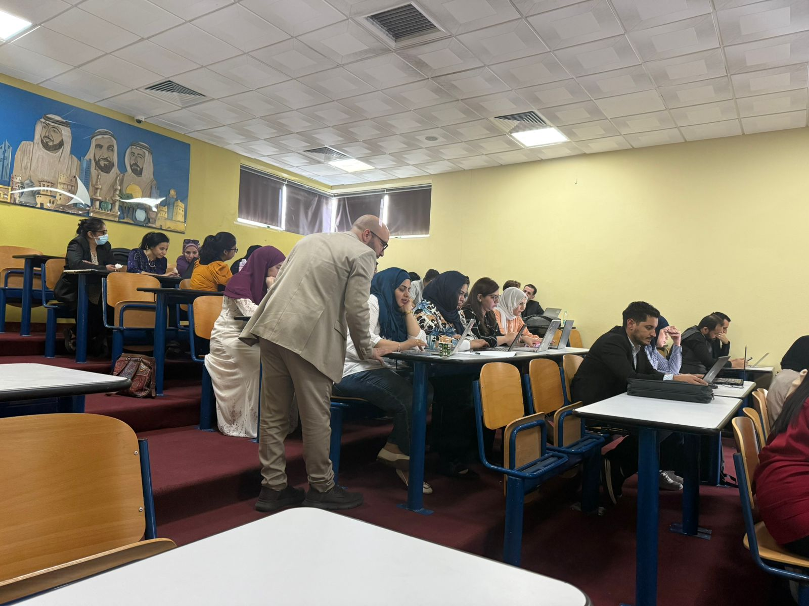
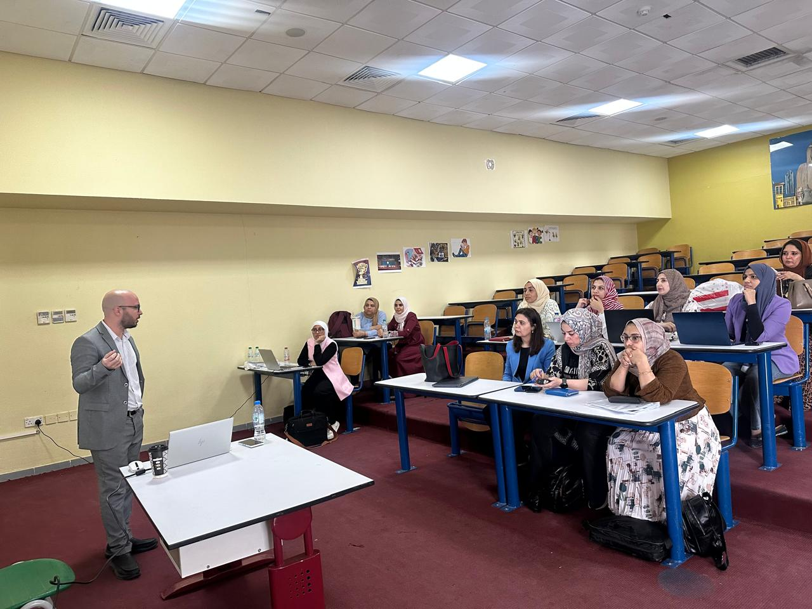
Actively entered classrooms non-judgmentally to model differentiation, inquiry-based approaches, elicitation, and HOTs.
Collaborated with teachers to analyze MAP and literacy data, shifting toward true "Assessment for Learning."
Successfully converted traditional walkthrough and observation forms into efficient online tools.
Conducted regular teacher surveys to collect data and determine the most effective, supportive ways to drive improvement.
Upgraded physical learning spaces, ensuring all classes feature word walls and reading corners, while hallways proudly display "Student of the Month" per grade level.
Overall Impact:
Directly contributed to raising progress and attainment indicators in Math and Science across the whole school.
To continuously improve my own practice, I recorded transcripts of 1-on-1 Teams meetings with teachers while collaboratively reviewing their lesson plans.
I utilized AI to analyze these transcripts to evaluate my leadership skills. I prompted it to provide objective feedback on:
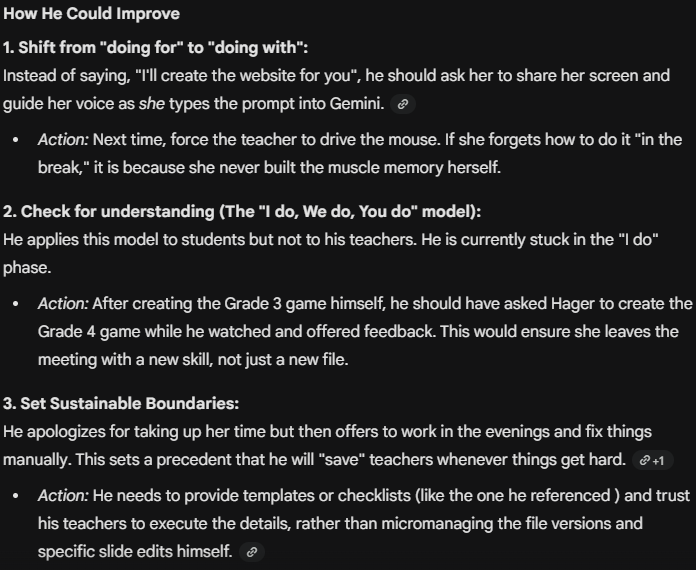
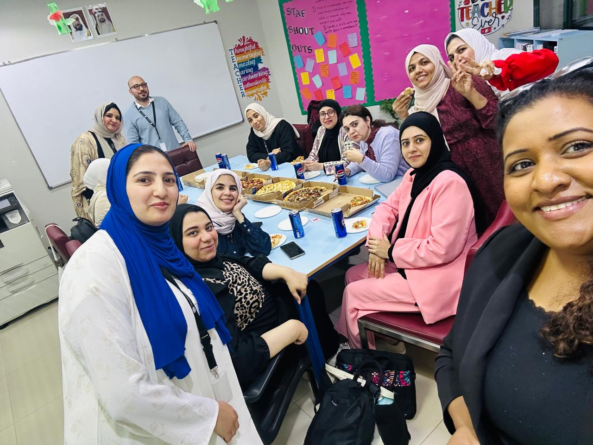
Building Trust & Team Camaraderie
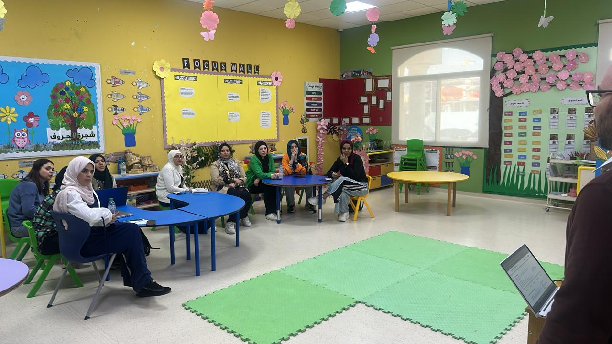
Active, Hands-On PD
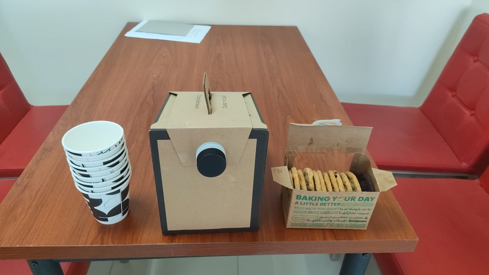
Prioritizing Staff Wellbeing
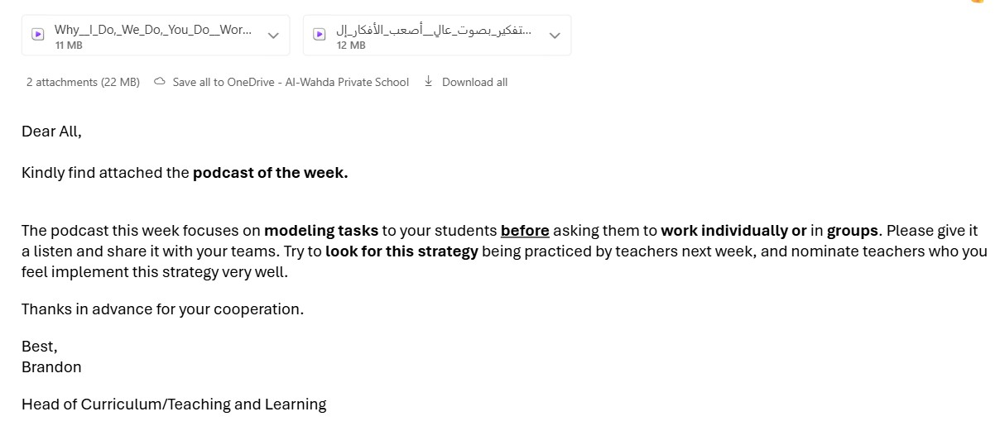
Asynchronous Podcast PD
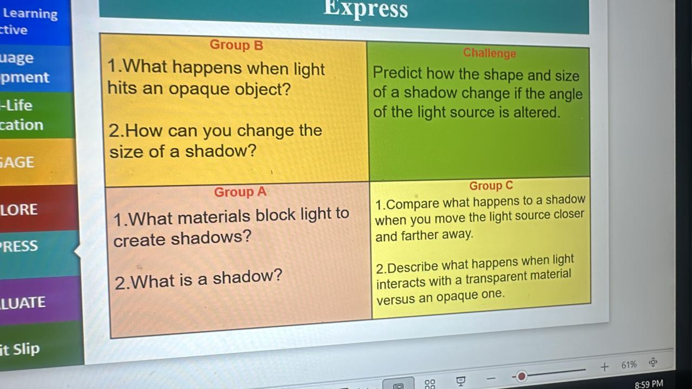
Modeling Differentiation
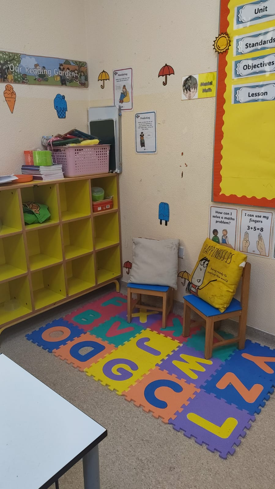
Cozy, Inviting Reading Gardens
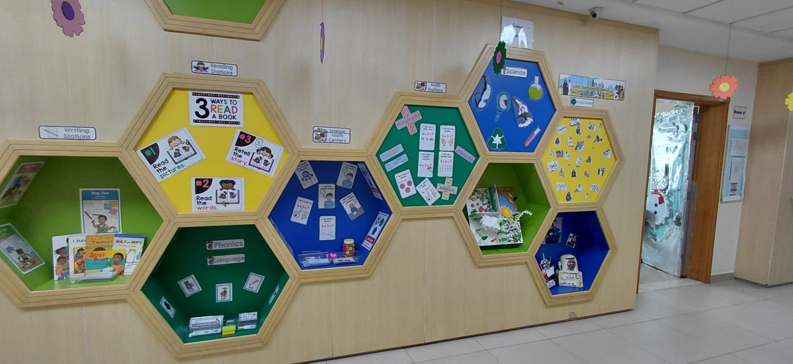
Revitalized Corridors Showcasing Student Work
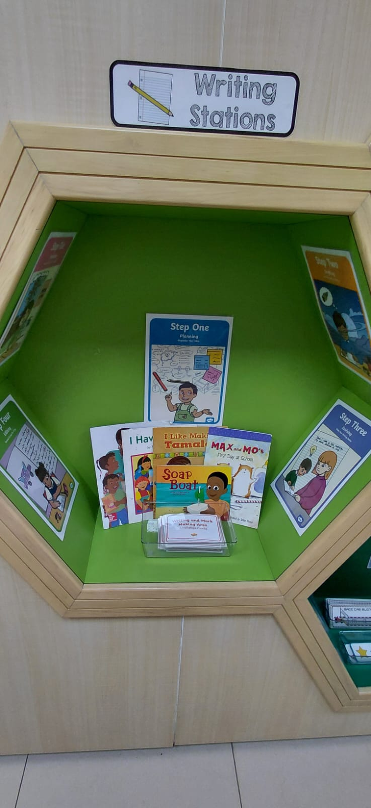
Accessible Writing Stations
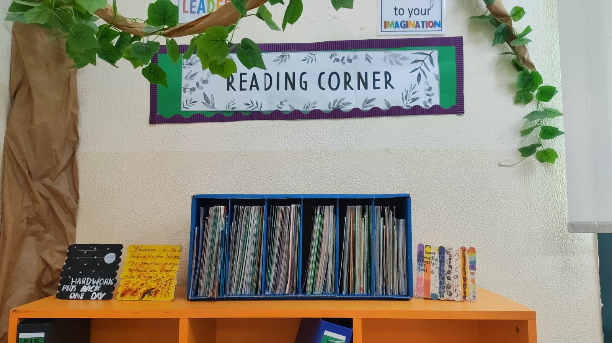
Student-Centric Resources
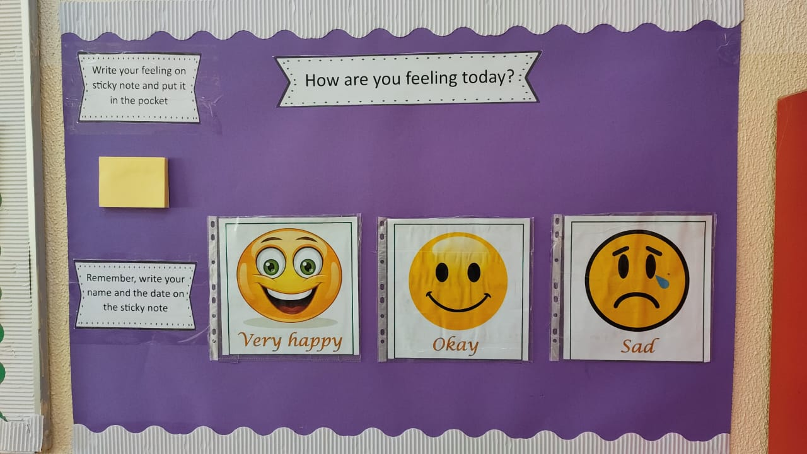
Daily Focus on Emotional Wellbeing
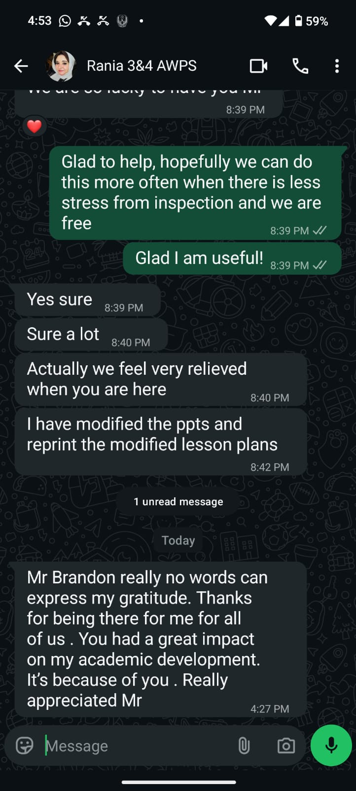
"You've completely transformed our department..."
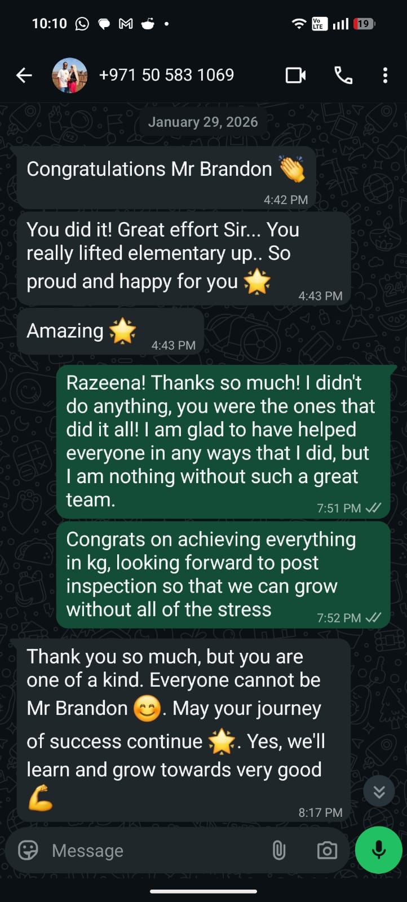
"You really lifted elementary up..."
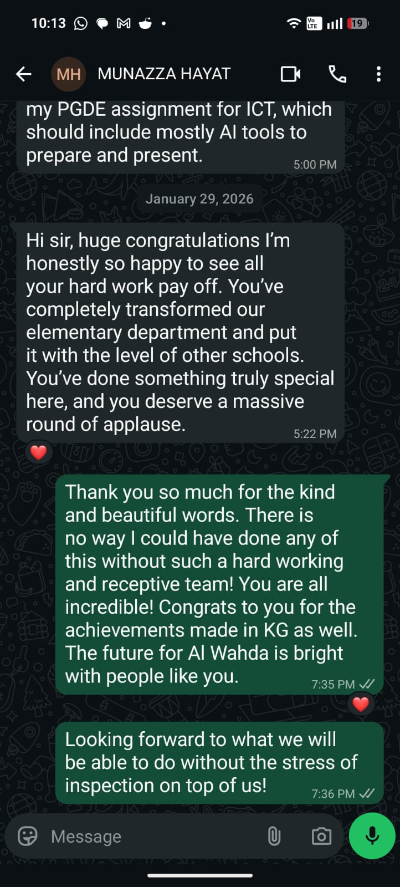
"A great impact on my academic development."
"As you currently intern in schools, what do you find to be the most time-consuming part of the job?"
"What tools or resources would you like to see a Head of Curriculum / T&L create to actually lighten your workloads?"
I look forward to hearing about your experiences.
It has been a privilege to lead these initiatives at Al Wahda Private School and to learn alongside all of you in this practicum.
Brandon Abdul Baki
Questions & Open Discussion
The Next Chapter